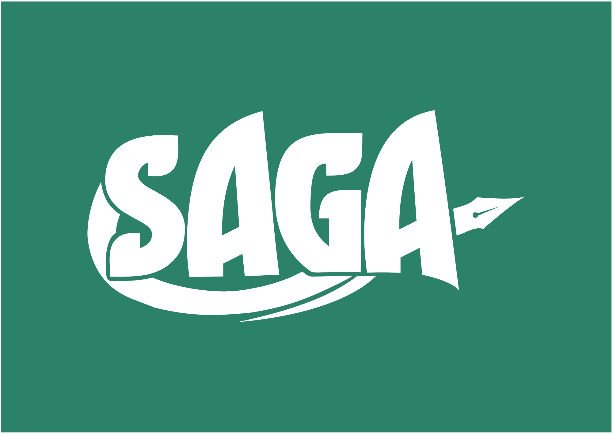
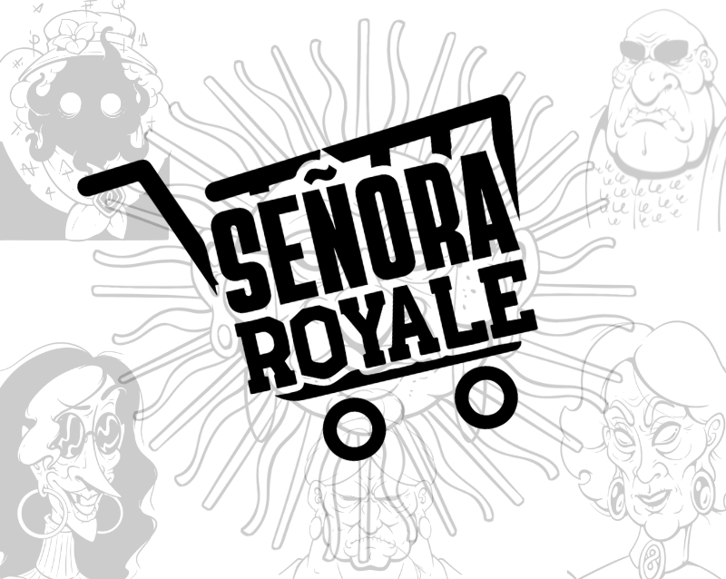
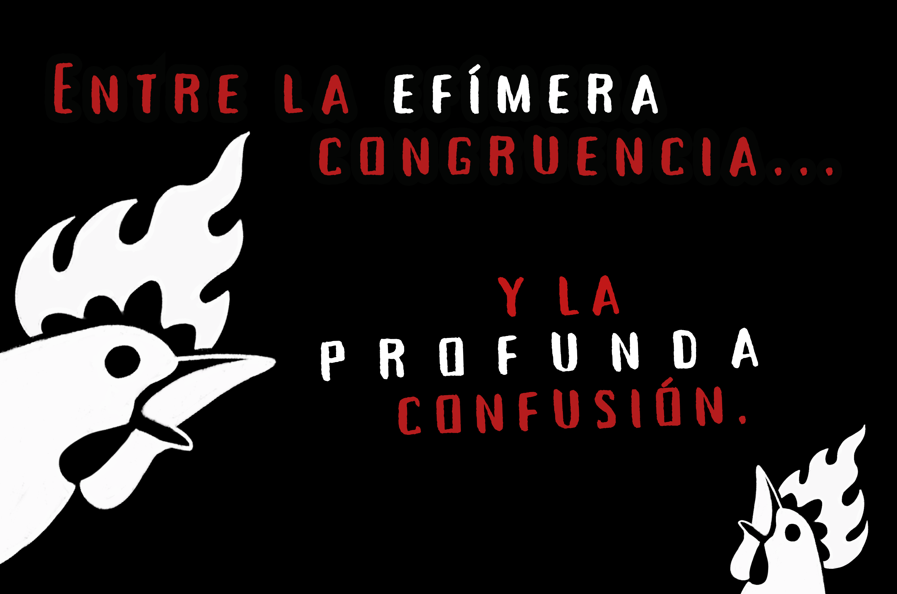

Entregallos & Co es lo que sucede cuando dos personas muy obsesivas y pasionales sobre sus hobbies se proponen trabajar en equipo para crear los juegos de rol que sueñan narrar.

Los juegos de rol nos entregan algunos de los momentos más memorables de nuestras vidas. Contamos anécdotas de nuestros personajes como si fueran las nuestras y en el afán de meter a más personas a la conversación utilizamos la mejor excusa para llevar nuestro rolcito cada vez más lejos: crear nuevos juegos.
Cada regla se reescribió a mano las veces que hizo falta hasta que funcionó. Tenemos charlas permanentes sobre la naturaleza maligna de los gerundios y lo mucho que nos jode la IA. Nuestros aciertos y nuestras fallas son humanas.
Todo lo que armamos lo hacemos pensándolo desde el asiento de lxs jugadorxs. Además de juegos publicaremos herramientas y ayudas para nuestros juegos y para el arte de jugar rol en general: sesiones cero, herramientas de seguridad y más.
No negociamos con misóginos, fascistas ni con ningún tipo de persona que se acerque a lastimar nuestro espacio de juego. Todos nuestros juegos buscan suceder en un espacio seguro donde se promueva la cooperación entre todas las personas en la mesa. Y si podemos noquear a algún fascista en el proceso... ¡mejor!
Dos juegos ya disponibles y uno más en camino. Crecen tan rápido...

Sistema de juego de ambientación agnóstica con reglas que premian el roleo, la narrativa y las grandes ideas en los momentos más críticos de las aventuras. ¡Creá tu personaje y tu mundo a medida!

Todos los pasillos del supermercado estaban en paz hasta que usted detectó que no era la única observando esa última lata de paté. De 2 a 5 jugadoras, pensado para imprimirse en 2 hojas A4 doble faz.
Un puñado de aventureros busca propagar el nombre de su patrón, deidad o prestamista antes de que este pierda su poder. Nuestro próximo juego, todavía en construcción.

Nuestros juegos tienen identidades propias, pero su espíritu es el mismo: el nuestro. Sería muy difícil hacer lo que hacemos sin compartir un nivel de confianza absurdo, y afortunadamente, el rol nos encontró. Somos igual de pesadxs, igual de apasionadxs, igual de tercxs (vos más Belén), e igual de imparables cuando trabajamos en este proyecto.
«Entregallos podrá ser ridículo y por momentos un sinsentido, pero es NUESTRO sinsentido.»
Tiene epifanías y busca la forma de traerlas al mundo real soltando todo lo que se le ocurre en el papel. A veces hace chistes que se van demasiado lejos y terminan convirtiéndose en un manual de doscientas páginas. Ups. Su juego de rol favorito es MASKS: A New Generation y si le hablás mal de Korra empieza a monologarte en la cara.
Part time editora de Entregallos y traductora, full time mejor amiga/hermana/doppelganger de Eli. Su trabajo es hacer que las ridiculeces de Entregallos tengan sentido y VAYA que hace un gran trabajo con eso. Pregúntele sobre Dragon Age, druidas y sus OCs. Consíganse una Bel en sus vidas, no se van a arrepentir.